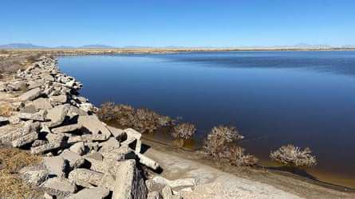
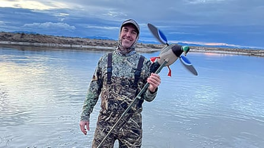
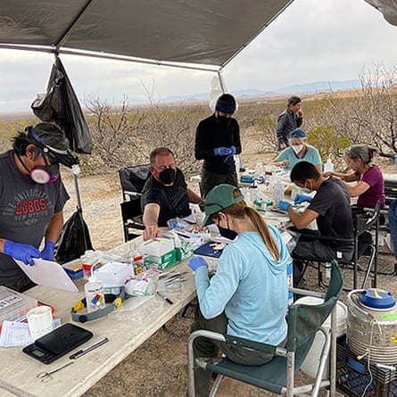
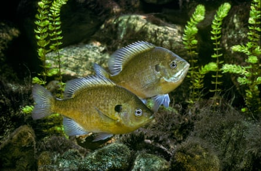

F or years, Christopher Witt took birdwatchers to Holloman Lake in the Chihuahuan desert off the route 70 highway in New Mexico . By mid-morning the sun would beat down as they huddled in the scant shade of the van. There were no trees other than a collection of salt cedars on the lake’s north shore. But the discomfort didn’t matter when the peregrine falcons appeared, slicing through the sky. “It was hard to leave that place,” says Witt.
The lake – created in 1965 as part of a system of wastewater catchment ponds for Holloman air force base – is an unlikely oasis. Other than small ponds created for livestock it is the only body of water for thousands of square kilometres in an otherwise stark landscape. However, Witt says there was always something slightly weird about the foam that would form around the edge. “But I only saw that stuff once I knew.”
Few people live around here, but those that do enjoyed the lake. Online it was billed as a “ free, no-frills experience ” for camping. On weekends, up to 20 people could be seen pitching tents and barbecuing on the southern shore.
Holloman Lake was created in the 60s and became a wildlife haven.Photograph: Jean-Luc Cartron/UNM
In 2009, plans were drawn up to construct a pavilion, beach area and nature trails to encourage more people to enjoy the area. But all that changed in 2017 when authorities discovered what was in the water.
Since then an alarming picture has been building up of the extent of the chemical contamination at Holloman Lake. Last month, research co-authored by Witt showed the site has the highest Pfas concentration in water and plants ever recorded in peer-reviewed literature. Every part of the ecosystem is saturated in these “forever chemicals”, including the soil, algae, invertebrates, fish and reptiles.
Christopher Witt holds a decoy that was used to help sample ducks for the Pfas study at Holloman Lake.Photograph: UNM
Pfas, which stands for ‘per- and polyfluoroalkyl substances’, are a group of thousands of human-made chemicals prized for their water, heat and grease-resistant properties. The same attributes that make them so useful in industrial and consumer products are what make them so bad when they leak into the environment, where they can persist for hundreds of years.
Witt’s birdwatching spot turned into a “natural field laboratory” for understanding how forever chemicals affect ecosystems. He stopped going there for the pleasure of watching birds, and shifted to studying the area in his capacity as a professor of biology at the University of New Mexico. “Honestly, I try not to spend too much time there,” he says. “You can take up some of these Pfas compounds through skin contact, and you can breathe them in through the air and dust.”
W hen the Pfas results came back from the lab, Witt assumed it was a mistake. “There were no other analogs that we could find for this level of contamination,” he says. “The orders of magnitude that we were dealing with were absolutely shocking. We thought we were doing something wrong with the converssion of units.”
But the numbers were correct. Across 23 bird and mammal species tested, Pfas concentrations averaged tens of thousands of parts per billion, 2024 research found . For comparison, in 2019 thousands of dairy cows in Clovis , New Mexico were culled because their milk was contaminated with less than six parts per billion.
A field crew from the University of New Mexico processes samples taken from small mammals at Holloman Lake.Photograph: Jean-Luc Cartron/UNM
The main cause of contamination is the firefighting foams used in training exercises by the US air force at the Holloman site from about 1970. The single most contaminated individual from the 2024 study was a 1994 specimen of a white-footed mouse , showing pollution had been high for decades.
A dead killdeer chick was found by its nest on the ground near the lake. It was sent to the lab for testing, and its tissues had the highest Pfas concentration recorded to date in a bird, according to the 2025 paper.
The revelations about Pfas in the lake water triggered lawsuits from New Mexico’s Environment Department against the military. In the US there are more than 9,000 active legal cases related to the production or release of Pfas.
But for Witt and other researchers on the ground, the scientific investigation was just beginning. He describes the state of current research as a “hodgepodge of surveys here and there”, all saying that we still don’t know enough about how Pfas are moving through food webs globally, and how they could be affecting wildlife.
Now, the body of evidence of the impact of Pfas on wildlife is growing.
Bluegill fish have been found to swim more slowly after exposure to Pfas.Photograph: Phil Degginger/Alamy
In Michigan, bluegill fish have been found to swim more slowly after Pfas exposure, suggesting they could be physically or neurologically impaired. Exposed black-legged kittiwakes are developing thyroid dysfunctions and hormonal imbalances. Sea turtles in contaminated sites in Australia are producing hatchlings with deformed scales and health problems. American alligators in North Carolina are more susceptible to infections , while dolphins in South Carolina are showing signs of chronic inflammation .
More than 600 species on every continent are at risk of harm, according to a map by the Environmental Working Group (EWG) illustrating how harmful chemicals are filtering through ecosystems. When they began mapping the research, “we thought: ‘it’ll be a quick one month project’ – then you quickly realise there are hundreds and hundreds of studies,” says David Andrews, acting chief science officer at EWG. “It turned out to be a significant amount of work.”
It is likely that these chemicals are an additional stressor threatening species, along with climate breakdown and habitat loss. “Nothing really escapes these chemicals – this is not something you can fly away from,” says Andrews.
Health impacts in humans, such as cancers, hormonal disruption and immune system disruption, are increasingly well documented. Research shows there are parallels in wildlife. “What we see is an overlapping pattern of health harm between both humans and the wildlife species that have been studied,” says Andrews. As sampling becomes cheaper and more accessible around the globe and more testing is done, the map of Pfas in wildlife will continue to expand, he says.
The buildup of Pfas in wildlife also raises questions for those who hunt or consume wild meat. At Holloman Lake, even a single gram of duck meat would be too toxic to safely eat, based on average Pfas concentrations. Yet this is still a popular area for hunting.
Pfas pollution is so high in bird populations at Holloman Lake that even a gram of duck meat would be too toxic to eat.Photograph: Michael J Andersen/UNM
Researchers are testing 400 ducks across the state to work out whether contaminants are jumping from hotspots such as Holloman to other wetlands. The preliminary results are “concerning”, says Witt, showing widespread contamination. That could be because ducks from sites such as Holloman are spreading it, or because there are other contaminated sites across the US, or some combination of the two. “When you are eating wild duck meat, probably anywhere in North America, you’re kind of rolling the dice,” he says.
Now, instead of watching birds, Witt is blending in with hunters in camo, capturing ducks and other birds and mammals to test their bodies for Pfas. “I have really conflicted feelings about it; it’s a beautiful place, it’s so biodiverse, and yet really troubled,” says Witt. “I feel a sense of urgency to figure out what is happening to the birds that are there.”
Find more age of extinction coverage here , and follow the biodiversity reporters Phoebe Weston and Patrick Greenfield in the Guardian app for more nature coverage.